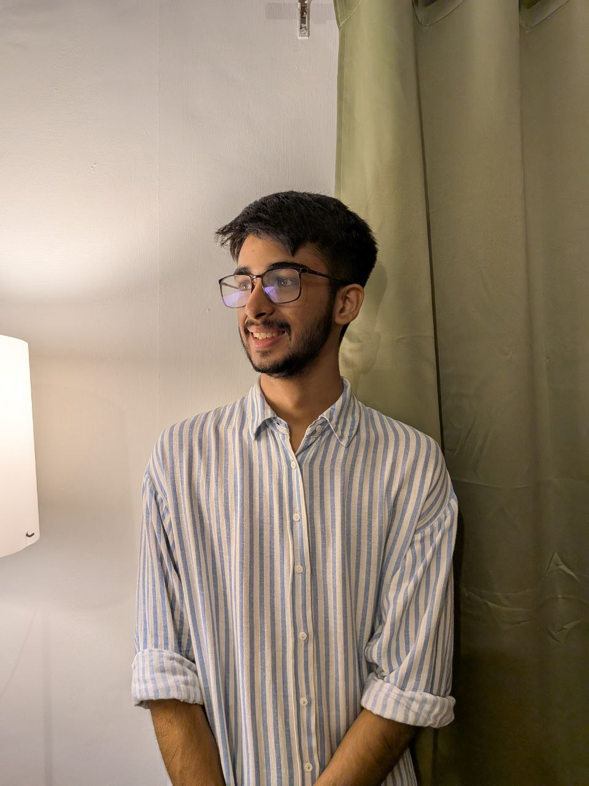
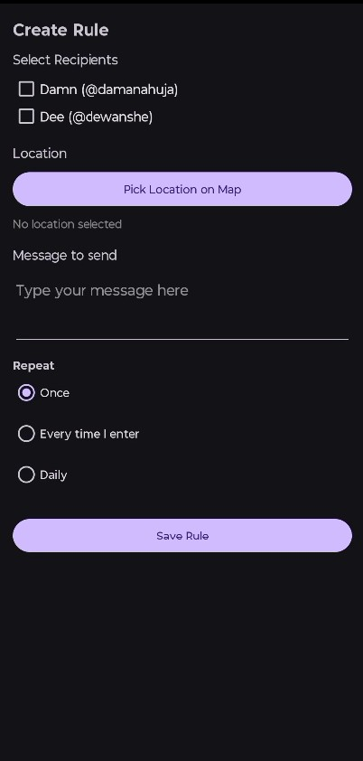
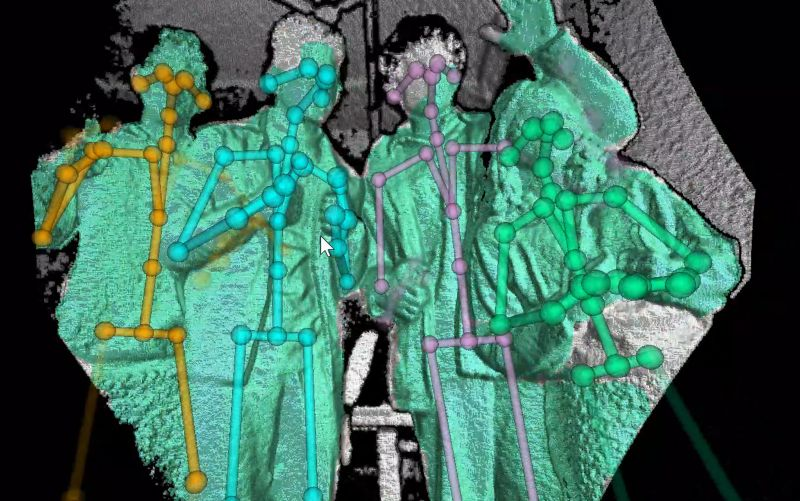

Led product delivery across XR and AI projects with engineering, client, and execution ownership.
Software Developer and XR Engineer
I build XR products, research prototypes, and software that people can actually use.
I am a Computer Science student at Delhi University and former CTO at XRVisionLabs. Most of my work has been in XR, Unity, computer vision, and product-heavy builds where the brief is messy and the turnaround is fast.

Focus Areas
XR, Unity, computer vision, product engineering
Worked on motion tracking, Kinect-based pose systems, and immersive interaction experiments.
Built products for interior design, digital twins, defense training, and workflow automation.
Why Me
I like owning the whole thing, not just my piece of it.
This portfolio is a mix of shipped work, applied research, and the kind of projects where you have to move between product thinking, technical implementation, and presenting the work clearly to other people.
Fast ramp-up
I have already worked across Unity, WebXR, backend automation, digital twins, AI-assisted experiences, and research tooling.
End-to-end mindset
I can move from figuring out the problem to prototyping, shipping, presenting, and tightening the result after feedback.
Team-ready communication
Client collaboration, public speaking, and cross-functional work are already part of how I operate.
JavaScript
Node.js
C#
Unity
WebXR
AR/VR/MR
Unreal Engine
Computer Vision
Problem Solving
Project Management
Leadership
Rapid Prototyping
Selected Work
A few projects that show how I work.
These are the projects that feel most representative: shipped XR work, applied experiments, and a few smaller builds that show range without padding the page.
VR
Product
Meta Store
XRchitect
A VR interior design tool for walking through layouts, reviewing ideas in scale, and making spatial decisions faster.
- Turned static planning into something clients and teams could actually step inside.
- Used in both professional and learning-focused environments.
Defense
XR
Simulation
CombatXR
A battlefield training system combining VR, AR, and simulation workflows for more realistic coordinated practice.
Mixed Reality
Collaboration
PlanXR
A mixed reality planning tool for terrain review, scenario mapping, and shared decision-making.
Digital Twin
Infrastructure
TeleTwin
A 3D telecom tower twin built for inspection, planning, and clearer infrastructure visibility.

Automation
Bot
Backend
TeleAttendance
A Telegram-based attendance bot that handled validation, timestamps, and cleaner record-keeping.
Open GitHub Repo
VR/MR
AI-assisted
TopologyXR
A data center planning environment with detailed scanned assets and AI-assisted layout generation.
View on Meta Store
Cybersecurity
MR
Threat Monitoring Digital Twin
A mixed reality visualization layer for turning security data into something easier to explore and act on.
Unity
Game Dev
Archery, CrossRoad, Galaxy Shooter
Smaller game projects I used to sharpen gameplay systems, iteration speed, and performance-aware implementation.
Open Archery RepoExperience
Work, research, and the path so far.
CTO, XRVisionLabs
Led a multidisciplinary team delivering XR and AI work across product direction, technical planning, and client execution.
Software Developer, XRVisionLabs
Built immersive products including XRchitect, CombatXR, and WebXR navigation workflows.
Research Intern, Delhi University
Prototyped motion tracking workflows using Azure Kinect, Unity, and Unreal Engine for immersive environments.
B.Sc. (Hons.) Computer Science
Delhi University, expected 2027.
School Performance
90% in AISSCE (PCM) in 2023 and 87% in AISSCE in 2021.
Public-facing communication
Guest lecture at OP Jindal School of Art and Architecture, plus a remote talk at AWE Nite Florida.
Research
Computer vision and photogrammetry work behind the product side.
These projects matter because they show I am comfortable working close to sensing, spatial computing, and technical experimentation, not just interface layers.
Advanced Motion Tracking
Explored pose estimation, skeletal tracking, and more responsive immersive interaction using sensor-driven inputs.

Pose Detection with Kinect
Real-time body tracking work using Microsoft Kinect for motion analysis, gesture systems, and XR interaction.
Multi-Kinect Holographic Capture
Combined depth data from multiple sensors to push toward richer multi-angle holographic capture.
3D Assets
Photogrammetry workflows for usable production assets.
I worked on scanning, reconstruction, cleanup, texturing, UV mapping, and optimization for detailed 3D models.
310 Server
A photorealistic infrastructure asset prepared for immersive product environments.
Virtual Lab
Environment model demonstrating scan-to-usable-asset workflow quality.
Highlights
Other things worth knowing.
Academic achievements
School rank 3 in Silver Zone Math Olympiad and 95% in Physics in CBSE examinations.
Certifications
Unity Development, AI Workshop, and Augmented Reality coursework.
Outside tech
Silver Medalist under IAYP and multiple medals and trophies in hip hop dance competitions.